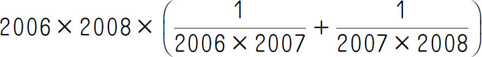
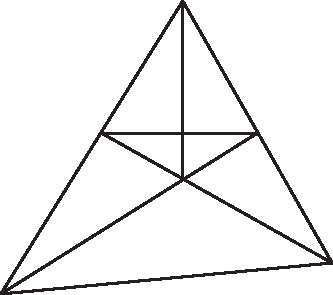
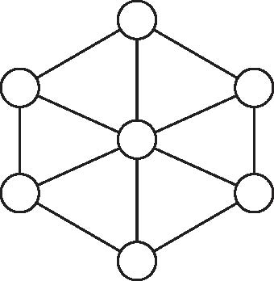
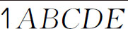
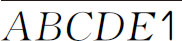
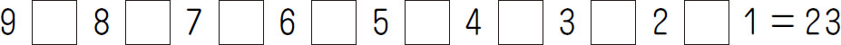
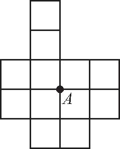

1．

＝_____．2．定义运算“△”如下：对于两个自然数a 和b ，它们的最大公约数与最小公倍数的和记为a △b ，例如：4△6＝（4，6）＋［4，6］＝2＋12＝14．根据上面定义的运算，18△12＝_____．
3．图中共有___个三角形．
 |
 |
| 第3题 | 第4题 |
4．如图所示，圆圈内分别填有1，2，…，7这7个自然数．如果6个三角形的顶点处圆圈内的数字的和是64，那么中间的圆圈内填入的数是_____．
5．在一次数学测验中，包括小明在内的6名同学的平均分为70分，其中小明得了96分，则小明以外的另5名同学的平均分为___分．
6．已知六位数

，这个六位数的3倍正好是
，这个六位数是_____．7．有一个整数，70、110、160分别除它所得到的3个余数之和是50，那么这个整数是_____．
8．能否在下式中填入适当的“＋”“-”，使等式成立？

9．从一块正方形的木板上锯下宽为3分米的一个木条以后，剩下的面积是108平方分米．木条的面积是___平方分米．
10．用数字6，7，8各两个，组成一个六位数，使它能被168整除．这个六位数是_____．
11．为锻炼身体，小华每4天的最后一天爬一次山．小军每5天的最后一天爬一次山．4月1日是星期日，他们在山中相遇，下一次在山中相遇是星期___．
12．找规律填空：1，8，27，___，125，___．
13．甲、乙两地相距1500米，两人分别从甲、乙两地同时相向出发，10分钟后相遇，如果两人各自提速20％，仍从甲、乙两地同时相向出发，则出发后多少秒后相遇？
14．全班同学去划船，如果减少一条船，每条船正好坐9个同学；如果增加一条船，每条船正好坐6个同学．这个班共有多少个同学？
15．下图中每个小方格的面积是1平方厘米，请经过图中A 点画一条直线，将图形分成面积相等的两部分．

16．一项工程，若请甲工程队单独做需4个月完成，每月要耗资9万元；若请乙工程队单独做需6个月完成，每月耗资5万元．
（1）请问甲、乙两工程队合作需几个月完成？耗资多少万元？
（2）现要求最迟5个月完成此项工程，请你设计一种方案，既保证按时完成任务，又最大限度节省资金．
17．把125本书分给五年级（2）班学生，如果其中至少有1人分到至少4本书，那么，这个班最多有多少人？